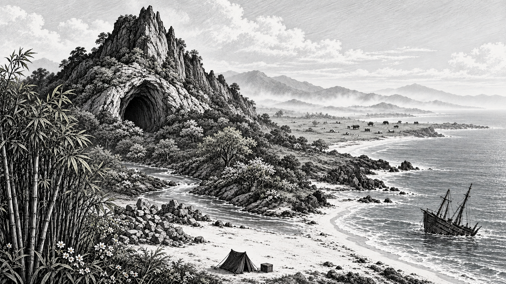
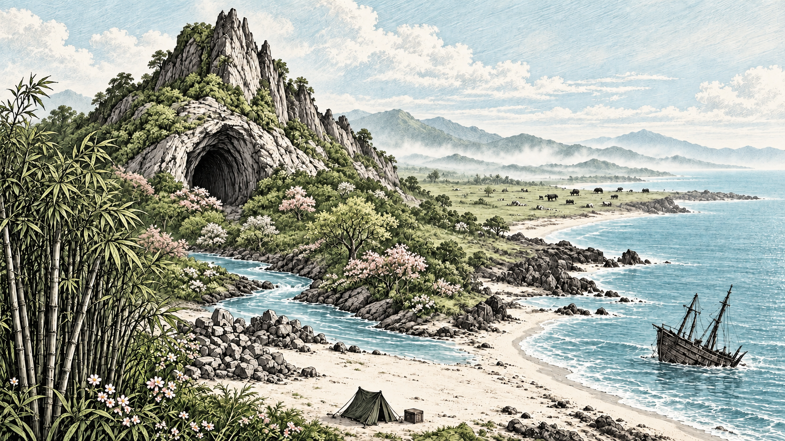

<!doctype html><html lang="zh-CN"><meta charset="utf-8"><meta name="viewport" content="width=device-width,initial-scale=1"><title>孤屿遗章 · 四季美术试稿</title><style>body{margin:0;background:#191c1b;color:#eee9dc;font:16px system-ui}header{padding:24px 4vw}h1{font:28px serif}p{color:#bbb7ac}nav{display:flex;gap:10px;flex-wrap:wrap}button{font:inherit;min-height:44px;padding:8px 22px;border:1px solid #777;background:#292d2a;color:inherit;cursor:pointer}button[aria-pressed=true]{background:#eee9dc;color:#222}main{padding:0 4vw 40px;display:grid;grid-template-columns:1fr 1fr;gap:20px}figure{margin:0}img{width:100%;display:block}img.mono{filter:grayscale(1)}figcaption{padding:12px 0}a{color:inherit}@media(max-width:900px){main{grid-template-columns:1fr}}</style><header><h1>孤屿遗章 · 四季</h1><p>黑白版画与淡彩试稿 · 点击图片查看原图。尚未替换游戏背景。</p><nav aria-label="季节"><button data-season="spring" aria-pressed="true">春</button><button data-season="summer" aria-pressed="false">夏</button><button data-season="autumn" aria-pressed="false">秋</button><button data-season="winter" aria-pressed="false">冬</button></nav></header><main><figure><figcaption>黑白版画</figcaption><a id="monoLink" href="spring-mono.png"></a></figure><figure><figcaption>淡彩版画</figcaption><a id="colorLink" href="spring-color.png"></a></figure></main><script>document.querySelectorAll('button').forEach(b=>b.addEventListener('click',()=>{document.querySelectorAll('button').forEach(x=>x.setAttribute('aria-pressed',String(x===b)));for(const mode of ['mono','color']){const src=b.dataset.season+'-'+mode+'.png';document.getElementById(mode).src=src;document.getElementById(mode).alt=b.textContent+'季'+(mode==='mono'?'黑白':'淡彩')+'版画';document.getElementById(mode+'Link').href=src}}));</script></html>
